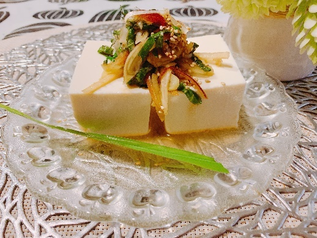

| ３工程で美味しい 腸が喜ぶ温活レシピ: 夏こそ温活 家族の健康は腸で決まる | |
| 橋本ゆう子 | |
| 橋本ゆう子 (2019) | |
はじめに
3工程で美味しい！シリーズ第2弾は『温活』をテーマにしています。
温活は寒い冬だけでなく、暑い夏こそ意識しなくてはなりません。
冷房により、カラダの芯まで冷えてしまうからです。
だから、夏こそ『温活』なのです。
ほんの少し食事から見直し、腸を冷やさないように注意しましょう！
カラダを温めるとされる食材は...
・赤やオレンジなど色の濃いもの
・土の中で育ったもの
・寒い地域で育ったもの
・発酵食品・・・などたくさんあります。
中でも私がオススメしたいのは「しょうが」と「にんにく」です。
手、足の先まで温めてくれますね。
そこで、第2弾では、この「しょうが」と「にんにく」レシピを集めています。
皆さまご存じの通り、しょうがもにんにくも殺菌作用が強い食材です。
大量に摂ると腸内細菌バランスをくずしてしまう場合もあります。
いくらカラダによいからといって、1度にたくさん摂ればよいというわけではありません。この事は、あらゆる食材に言える事です。
いろいろな食材を適量バランスよく摂る事！！ですね。
ちなみに、しょうがはすりおろしで小さじで1杯分、スライスで6～7枚分
にんにくは生で1片、火を通したもので2～3片が1日の適量目安と言われています。
美と健康を手に入れるには、コツコツ続けることが大切！！
この『温活』レシピ本も第1弾の『腸活』レシピ本同様、どこのスーパーにもある食材でカンタンに作れるレシピばかりです。
カラダを温めることは腸内フローラを整えること。そしてその結果、自己免疫力アップが期待出来ます。
ぜひご活用くださいね。
≪しょうがレシピ編≫
れんこんハンバーグ
材料2～3人分
・れんこん150g...すりおろす(歯ごたえがあった方がいい場合は細かく切る)
・合い挽き肉250ｇ
・長ネギ4～5cm...みじん切り
・しょうが1片...すりおろす
・大根おろし適量
・塩ひとつまみ
・片栗粉適量
・お好みの付け合わせ野菜（例：オクラ、ベビーリーフ、れんこんの素揚げ）
＊れんこんと合い挽き肉の分量の割合はお好みで調整してください。
1. 合い挽き肉、れんこん、長ネギ、しょうが、塩をよくこね、肉だねの固さをみながら、片栗粉(大1/2～大1)を加えよく混ぜる。
2. 【1】を両面焼く。
3. ソース...しょうゆ大3、ポン酢大2、酒大1、みりん大1、きび糖大1、水大1をひと煮立ちし、【2】にかける。たっぷりの大根おろしを添えて。
＊れんこんが余ったらスライサーでスライスし、油で揚げ、れんこんチップにすると美味しいですよ！また、うす切りにして、ハンバーグと一緒に焼いてもok。
≪もう1品≫
新玉ねぎと菜の花のおひたし
しょうがご飯
材料2合分
・しょうが100～150g...皮をむいて千切りにし、さっとゆで、水分しぼる
・ご飯2合...炊いておく
・豚挽肉50g～100ｇ（分量はお好みで）
1. ごま油で豚ひき肉を炒め、色が変わったら、しょうがを入れ炒める。
2. きび糖大1/2、みりん大3、酒大2、しょうゆ大3で味付けする。
3. 炊きあがったご飯に【2】をよく混ぜる。お好みで大葉をのせて。
≪もう1品≫
なすとシシトウの揚げだし
サバの油淋鶏ソース
材料2人分
・サバ2切れ...塩をふり、水分出たら、軽くふきとる
・れんこんやさつまいもなどのお好みの野菜...適当な大きさに切る
・長ネギ4～5cm...みじん切り
・しょうが1片...みじん切り
＊サバのかわりに、ブリでもok
1. サバに米粉（片栗粉）をまぶし、カラッと揚げる。
2. お好みの野菜にも米粉（片栗粉）をまぶし、揚げる。
3. 油淋鶏ソース...きび糖、しょうゆ、酢、ごま油、レモン汁、水各同量、に長ネギ、しょうがを混ぜる。＊2人分で各小2～3くらいです。
こんにゃくと玉ねぎの甘辛煮
材料2～3人分
・こんにゃく1/2枚...手で適当な大きさにちぎり、さっと下ゆでする
・玉ねぎ1個...くし切り
・しめじ1/2パック（なくてもok）...ほぐす
・しょうが1片...すりおろす
1. ごま油でこんにゃく、玉ねぎ、しめじを炒める。
2. 【１】に酒大1、きび糖小1、みりん大1、しょうゆ大1、しょうがを入れ味付け。
＊お好みでタカの爪（タネをとったもの）を加え、ピリッとさせても！
カレイの煮付け
材料2人分
・カレイ切り身2枚...水分をふきとる
・しょうが1片...スライス（飾り用は千切りに）
1. みりん大2、酒大3、きび糖大1、しょうゆ大2、水150mlをひと煮立ちさせ、しょうがのスライス2～3枚と、カレイを入れ煮る。
2. 煮えたら、しょうがの千切りをのせ出来上がり。
＊長ネギを一緒に煮ると美味しいですよ。
ナスと春菊のしょうが和え
材料2人分
・ナス1本
・春菊1束
・白いりごま適量
・しょうが1片...すりおろす
1. ナスは乱切りにし、塩水に10分ほどつけ（あれば塩麹をまぶし）、水分ふく。
2. 春菊は食べやすい大きさに切り、【1】と混ぜる。
＊春菊は葉の部分を使う。茎の部分はみそ汁などの具材に！
3. 【2】を、しょうが、めんつゆ大1と1/2、白いりごまで和える。
ミックスビーンズのジンジャースープ
材料2人分
・ミックスビーンズ水煮50g
・玉ねぎ1/2個...うす切り
・しょうが１片（お好みの分量でok）...すりおろす
・コンソメ適量（出来れば、無添加のもの）
・パセリ適量（乾燥パセリでok）
1. バターまたはオリーブオイルで玉ねぎをうす茶になるまで炒める。
2. 【1】に、水600ml、コンソメ適量を加え、やわらかくなるまで煮る。
3. ミックスビーンズを加え、ひと煮立ちしたら、最後にしょうがを入れる。
＊パセリを振って出来上がり。
ナスの煮浸し
材料4～5人分 大皿料理
・ナス6本...ヘタをとり、3～4等分にし、皮目にななめに数本切り込みを入れる。
・シシトウ10本...縦に切り込みいれる（はねるので必ず切り込みいれて！）
・油揚げ2枚...軽く油分をふき、短冊切り
・しょうが1片...すりおろす
・大葉2枚...千切り
1. ごま油でナスを炒め、軽く焼き色がついたら、シシトウをいれさっと炒める。
2. 【1】に、だし汁400ml、油揚げ、しょうゆ大1、塩小1/2、きび糖小1、酒大2を加え、落としぶたをして7～8分煮る。
3. 器に盛り、しょうが、大葉を添えて出来上がり。
＊タカの爪（タネをとったもの）を入れて、ピリッとさせても美味しいです。入れるタイミングは【1】です。
エノキの肉巻き
材料2～3人分
・エノキ1/2株...縦半分に切り、ほぐす
＊石づきの端っこだけを切り落とし、残りの石づきは捨てずに使う
・豚ロースうす切り肉またはバラ肉200～250g（９枚～10枚）
・しょうが1片...すりおろす
・お好みの付け合わせ野菜適量（例：ピーマン、キャベツの千切り）
1. 豚肉に塩、こしょうをし、エノキを巻き、米粉をまぶす。
2. ごま油で【1】を焼く。（野菜も一緒に焼く）
3. しょうが、酒大3、しょうゆ大3、みりん大1と1/2を加え、ふたをして蒸し焼きに。
豆腐とキノコの炒め煮
材料2～3人分
・木綿豆腐1丁...水切りをする
・マイタケ1/2株...ほぐす
・エリンギ1/2パック...適当な大きさに切る
・エノキ1/2株...半分に切り、ほぐす
・長ネギ1/3本...ななめ切り
・しょうが1片...すりおろす
1. マイタケ、エリンギ、エノキ、長ネギをごま油で炒め、塩少々。
2. 豆腐を手で大きめにちぎり、片栗粉をまぶし、【1】に入れ、さっと炒める。
3. だし汁300ml、みりん大2、しょうゆ大2を加え、煮る。
＊器に盛り、おろししょうがをのせて出来上がり。
＊キノコを炒めてから煮ると、とても美味しいです！
しょうがたっぷり牛丼
材料2人分
・牛肉こま切れ（バラ肉、うす切り肉でもok）150g
・玉ねぎ１個...くし切り
・しょうが1～2片...すりおろす
・紅ショウガ
1. 湯200mlに玉ねぎを入れ煮る。←湯で煮るのがポイントです！
2. 顆粒だし（出来れば無添加のもの）小1、しょうゆ大2、きび糖大1と1/2、酒大1と1/2を加え、牛肉を入れ煮る。
3. 最後におろししょうがをたっぷり入れ、さっと煮る。
＊つゆだくがお好みでしたら、湯と調味料の分量を多めに調整してください。
≪にんにくレシピ編≫
温活に欠かせない『にんにく』
まずはいろいろなレシピにアレンジ出来るガーリックオイルを作りましょう！！
ガーリックオイル
材料
・にんにく5片
・オリーブオイル150ml
＊にんにくとオリーブオイルの分量は目安です。冷蔵庫で2～3週間保存出来るのでお好みで調整してください
1. にんにくの芽を取り、粗みじん切りにする。（水分があると傷みやすいので、水分をよくふいてみじん切り）
2. フライパンに【１】とオリーブオイルを入れ、弱中火でうす茶になるまで炒める。
＊にんにくとオリーブオイルを入れてから火をつけましょう！
3. 【2】がさめたら、煮沸消毒したビンに入れ冷蔵庫で保存する。
＊魚料理、肉料理、パスタ、サラダ...様々な料理に使えます。
ガーリックオイルで作る
ガーリックポテト・ガーリック枝豆

材料2～3人分
・じゃがいも1～2個...くし切り
・枝豆適量...枝から外し、よく洗う。
1. じゃがいもは素揚げする。
2. 枝豆は塩をふり、よく揉み、塩茹でする。
3. フライパンにガーリックオイル大1～2を入れ、【１】と【2】をさっとからめ、塩、こしょうで味を整える。
＊枝豆のみ作る場合はお好みで【3】の時にタカの爪（タネをとったもの）を入れてもピリッとし、ビールに合います！
ガーリックオイルで作る
ほうれん草のにんにく炒め
材料2人分
・ほうれん草1わ
・フライドオニオン（市販のものでもok）
1. ほうれん草はよく洗い、根の端だけ落とし、食べやすい大きさにザク切り。
＊根のピンクの部分にも栄養がたくさんありますので、捨てないでくださいね。
2. ガーリックオイル大1～2をフライパン入れ、よく水分を切った【1】を加えさっと炒める。
3. 塩、こしょうで味を整える。仕上げにフライドオニオンを散らして出来上がり。
＊シンプルですが美味しい1品です！ほうれん草は炒めすぎないようにしてくださいね。
ガーリックオイルで作る
冷や奴のかけダレ

材料2人分
・絹豆腐1丁...2～4等分に切る
・みょうが1～2個...うす切り
・大葉3枚...千切り
・長ネギ4～5cm...みじん切り
・しょうがスライス3～4枚...みじん切り
・白いりごま適量
・ガーリックオイル小2～3
1. みょうが、大葉、長ネギ、しょうが、ガーリックオイル（にんにく1/2片みじん切りでもok）を混ぜる。
2. 【1】にポン酢＋ラー油適量を加え、よく混ぜる。
＊香り付けにごま油少々を加えても美味しいです！
3. 豆腐を器にのせ、【2】のかけダレをかけ、白いりごまをかけて出来上がり。
ガーリックオムレツ
材料2人分
・じゃがいも1個...細切り（太めの千切り）
・玉ねぎ1/4～1/2個...うす切り
・にんにく1片...芽を取り、粗みじん切り
・卵2～3個...溶いておく
1. 多めのオリーブオイルでにんにくを炒め、香りが出たら、玉ねぎ、じゃがいもを入れ炒め、塩、こしょう。
2. 【１】に溶き卵を回し入れ、焼き色がついたら、ひっくり返す。
3. ケチャップをかけて出来上がり。
＊タイム1枝を卵を回し入れるタイミングで入れ、一緒に焼いても爽やかです。
するめいかと豆苗炒め
材料2人分
・するめいか1杯...内臓抜いて、輪切り。足はわたを落として食べやすい大きさに切る
・豆苗1袋...根の部分を落とし、半分に切る
・しめじ1/2株...ほぐす
・にんにく1片...芽を取り、みじん切り
・しょうが1片...みじん切り
1. ごま油でにんにく、しょうがを入れ炒め、香りが出たら、いかを入れ炒める。
2. しめじを加え、酒小2、塩、こしょうで味を整える。
3. 最後に豆苗を入れさっと炒める。
＊味付けは塩、こしょうのみのシンプルなレシピです。
めかじきのにんにくソース
材料2人分
・めかじき2切れ...塩を少々ふり、水分出たらふく
・お好みの付け合わせ野菜（例：ベビーリーフ）
・にんにく1片...芽を取り、みじん切り（ガーリックオイル でもok）
＊ガーリックオイルレシピは別ページ参照
1. オリーブオイルでにんにくを炒め、香りが出たら、めかじき入れを両面こんがりと焼く。
＊ガーリックオイル使用の場合は、オリーブオイルでめかじきを焼き【2】でガーリックオイル大1を加える。
2. しょうゆ大1、みりん大1、酒大1、きび糖大1/2、酢大1/2を加える。
＊ソース多めがお好みでしたら、調味料分量を多めに調整してください。
ガーリックスープ
材料2人分
・にんにく2片...芽を取り、うす切り
・玉ねぎ1/2個...うす切り
・卵1個...溶いておく
・コンソメ適量（出来れば無添加のもの）
1. オリーブオイルでにんにくを炒め、香りが出たら、玉ねぎ入れ、炒める。
2. 水400ml、コンソメ適量を加え煮る。
3. 溶き卵を回し入れ、塩で味を整えて出来上がり。
キノコの温サラダ

材料2人分
・マイタケ1/2パック...ほぐす
・マッシュルーム1パック（4～5個）...大きいものは半分に切る
・エリンギ1/2パック...食べやすい大きさに切る
・サニーレタス適量
・にんにく1片...芽を取り、うす切り
・タカの爪1本...タネを取り、輪切り
1. オリーブオイルに、にんにく、タカの爪を入れ炒め、香りが出たら、キノコを全部入れ炒める。
2. 酒小1、しょうゆ小1を加え、塩、こしょうで味を整える。
3. サニーレタスをしいた器に【2】を盛り付ける。
＊他のキノコでもokですよ！
豚肉とにんにくの芽炒め
材料2人分
・豚うす切り肉150～200g...細切り
・にんにくの芽100g...4cmほどに切る
1. 豚肉にしょうゆ小1、みりん小1、酒小1、片栗粉小2で10分程下味をつける。
2. ごま油でにんにくの芽を炒め、色が鮮やかになってきたら、【１】を加え炒める。
3. 豚肉に火が通ったら、オイスターソース小1、しょうゆ小2を加え、さっと味をからめる。
トリもも肉のガーリックソース

材料2人分
・トリもも肉1枚...半分に切り、塩、こしょうをする
・お好みの付け合わせ野菜（例：赤パプリカ、ベビーリーフ）
・にんにく1片...芽を取り、うす切り
1. オリーブオイルでにんにくを炒め香りが出たら、トリもも肉を皮目から入れ、両面焼く。（皮目はパリッと色よく焼く）
2. 付け合わせ野菜も同じフライパンで焼く。
3. すべてに火が通ったら、酒大1、みりん大1、しょうゆ大1を加え、ひと煮立ちさせる。
＊【3】のソース多めがお好みでしたら、調味料分量を多めに調整して下さい。
おわりに
3工程で美味しい！シリーズ第2弾『温活』しょうが・にんにくレシピ
今回もカンタンなレシピばかりです。
なおかつ、カラダに優しいレシピです！！
カンタンでカラダに優しいレシピは決して難しいものではなく、むしろシンプル。
忙しい毎日、それほどの手間をかけなくても、カラダによいご飯を作り、家族みんなの健康が維持出来たら、うれしいですよね！
私自身も仕事をしながらの家事の中で常にそう思っています。
料理がニガテな方も大丈夫です。3工程ですから！！
「手作り」する意味って...安心安全なものを食卓に出すという事はもちろんですが、食べてもらう人への思いが大切ではないかと思うのです。
「健康を願う思い」きっと、たくさんの方がそんなあったかいステキな思いで毎日ご飯を作っているのですね。
腸内フローラを整えることは自己免疫力を上げること。
そしてそれは命を守ること！
そのために温活は大事。
このレシピ本が、少しでも腸内フローラを整えることの大切さを意識するきっかけになれば幸いです。
著者プロフィール
・1962年生まれ。神奈川県出身。2男1女の母。
・デトックス専門サロンminto主宰。
（ハーブ蒸し×リンパケア×腸内フローラ改善教室）
≪資格≫
・フェイシャルエステ、リンパドレナージ、英国式リフレクソロジー
・酵素デトックスインストラクター
・腸活アドバイザー
メディア紹介